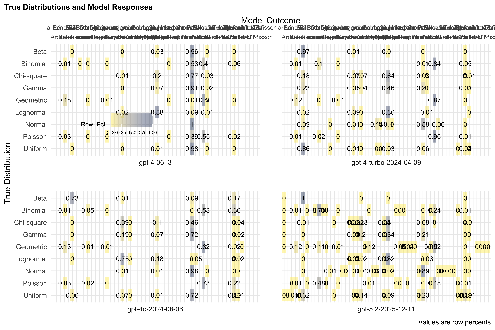
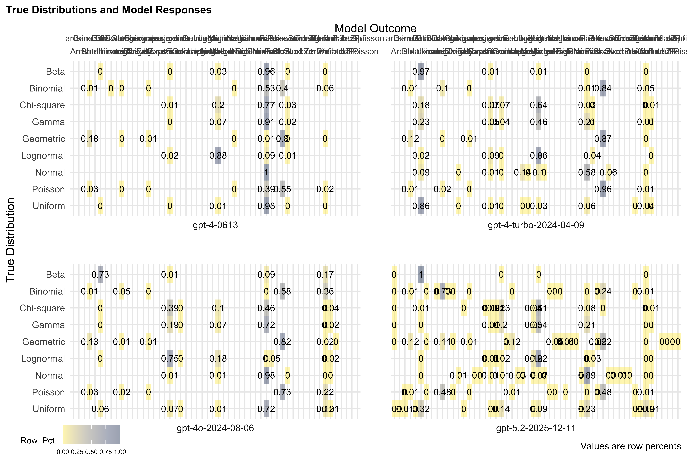
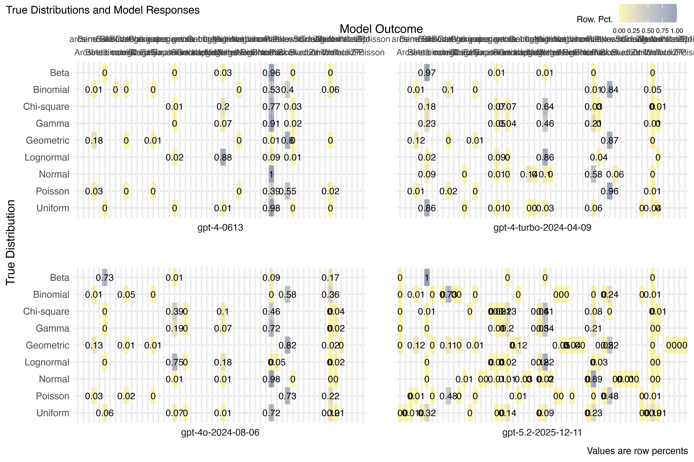
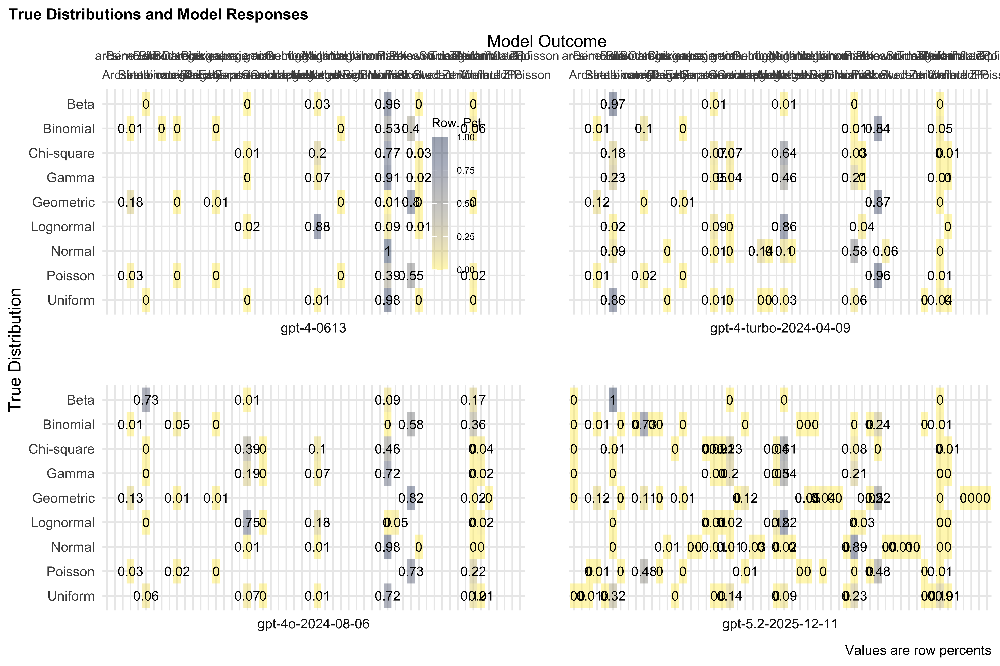

library(patchwork)
load("Complete.Data.All.0409.RData")
load("Complete.Data.All.0613.RData")
load("Complete.Data.All.0806.RData")
load("Complete.Data.All.1211.RData")
Complete.Data <- dplyr::bind_rows(Complete.Data.0409, Complete.Data.0613, Complete.Data.0806, Complete.Data.1211)Grapher
There is commented code for loading in each of the three data files. I have combined them and mutated them because it is a long operation.
A few objectives.
- It occurred to me that we do not really make use of the discrete tag. I will in this document in a moment.
Fresh.Outcome
I have recreated the outcomes below in a variable called Fresh.Outcome. We should be careful about how these are recoded to be both transparent about what it does and for our clarity in reporting. Here is that table.
Complete.Data$Fresh.Outcome <- c(1:196000) %>% map_chr(., function(x) {Complete.Data$response$body$choices[[x]]$message$content})
Complete.Data$model <- Complete.Data$body$model
Complete.Data |> group_by(Fresh.Outcome, model) |> summarise(Count = n()) |> ungroup() |> pivot_wider(names_from = model, values_from = Count) |> gt()| Fresh.Outcome | gpt-5.2-2025-12-11 | gpt-4-0613 | gpt-4-turbo-2024-04-09 | gpt-4o-2024-08-06 |
|---|---|---|---|---|
| 15 | NA | NA | NA | |
| Arcsine | 36 | NA | NA | NA |
| Bernoulli | 744 | 1071 | 690 | 835 |
| Beta | 4165 | 14 | 8885 | 2141 |
| Betabinomial | 33 | NA | NA | NA |
| Bimodal | NA | 49 | NA | NA |
| Binomial | 15525 | 84 | 1969 | 1028 |
| Categorical | 86 | NA | NA | NA |
| Cauchy | 35 | NA | 6 | NA |
| Chisquare | 9 | NA | NA | NA |
| Degenerate | 71 | 71 | 71 | 71 |
| ExGaussian | 3 | NA | NA | NA |
| Exponential | 196 | 156 | 930 | 5266 |
| Gamma | 2714 | NA | 517 | 17 |
| Geometric | 583 | NA | NA | NA |
| Gumbel | 76 | NA | NA | NA |
| Laplace | 3 | NA | 454 | NA |
| Log-Normal | NA | NA | NA | 3 |
| Log-normal | NA | NA | NA | 938 |
| Logistic | NA | NA | 7 | NA |
| Lognormal | 8127 | 3979 | 7974 | 468 |
| Mixture | 1 | NA | 1 | NA |
| Multinomial | 24 | NA | NA | NA |
| NegBinomial | 5 | NA | NA | NA |
| Negative Binomial | NA | 5 | NA | NA |
| NegativeBinomial | 224 | 4 | NA | NA |
| Negativebinomial | 197 | NA | NA | NA |
| Negbinomial | 1 | NA | NA | NA |
| Normal | 5201 | 29210 | 3230 | 12090 |
| Pareto | 83 | NA | 126 | 142 |
| Pascal | 77 | NA | NA | NA |
| Poisson | 8553 | 12981 | 22764 | 17042 |
| Skew-normal | NA | NA | 10 | NA |
| Skew-right | NA | 3 | NA | NA |
| SkewNormal | NA | NA | 160 | NA |
| Skewed | NA | NA | NA | 1 |
| Skewness | NA | 245 | 5 | NA |
| Skewnormal | 15 | NA | 3 | NA |
| Student | 29 | NA | NA | NA |
| Studentt | 1 | NA | NA | NA |
| Triangular | 16 | NA | 1 | NA |
| Uniform | 1250 | 1128 | 1141 | 8557 |
| Weibull | 78 | NA | 56 | 400 |
| ZIP | 1 | NA | NA | NA |
| Zero-inflated | NA | NA | NA | 1 |
| ZeroInflatedPoisson | 4 | NA | NA | NA |
| ZeroinflatedPoisson | 8 | NA | NA | NA |
| Zipf | 2 | NA | NA | NA |
| arcsine | 1 | NA | NA | NA |
| beta | 4 | NA | NA | NA |
| binomial | 1 | NA | NA | NA |
| categorical | 3 | NA | NA | NA |
| exgaussian | 1 | NA | NA | NA |
| exponential | 3 | NA | NA | NA |
| gamma | 33 | NA | NA | NA |
| geometric | 3 | NA | NA | NA |
| lognormal | 723 | NA | NA | NA |
| negativebinomial | 8 | NA | NA | NA |
| normal | 11 | NA | NA | NA |
| skewnormal | 3 | NA | NA | NA |
| t | 13 | NA | NA | NA |
| uniform | 2 | NA | NA | NA |
I am going to recreate the variable as follows.
Complete.Data <- Complete.Data |>
mutate(Outcome = case_match(Fresh.Outcome, c("Lognormal","Log-Normal","Log-normal") ~ "Lognormal",
c("NegativeBinomial","Negative Binomial") ~ "Negative Binomial",
c("Skewed","Skewnormal","SkewNormal","Skew-normal","Skew-right","Skewness")~ "Skewed", .default = Fresh.Outcome))
Complete.Data |> group_by(Outcome, model) |> summarise(Count = n()) |> ungroup() |> pivot_wider(names_from = model, values_from = Count) |> gt()| Outcome | gpt-5.2-2025-12-11 | gpt-4-0613 | gpt-4-turbo-2024-04-09 | gpt-4o-2024-08-06 |
|---|---|---|---|---|
| 15 | NA | NA | NA | |
| Arcsine | 36 | NA | NA | NA |
| Bernoulli | 744 | 1071 | 690 | 835 |
| Beta | 4165 | 14 | 8885 | 2141 |
| Betabinomial | 33 | NA | NA | NA |
| Bimodal | NA | 49 | NA | NA |
| Binomial | 15525 | 84 | 1969 | 1028 |
| Categorical | 86 | NA | NA | NA |
| Cauchy | 35 | NA | 6 | NA |
| Chisquare | 9 | NA | NA | NA |
| Degenerate | 71 | 71 | 71 | 71 |
| ExGaussian | 3 | NA | NA | NA |
| Exponential | 196 | 156 | 930 | 5266 |
| Gamma | 2714 | NA | 517 | 17 |
| Geometric | 583 | NA | NA | NA |
| Gumbel | 76 | NA | NA | NA |
| Laplace | 3 | NA | 454 | NA |
| Logistic | NA | NA | 7 | NA |
| Lognormal | 8127 | 3979 | 7974 | 1409 |
| Mixture | 1 | NA | 1 | NA |
| Multinomial | 24 | NA | NA | NA |
| NegBinomial | 5 | NA | NA | NA |
| Negative Binomial | 224 | 9 | NA | NA |
| Negativebinomial | 197 | NA | NA | NA |
| Negbinomial | 1 | NA | NA | NA |
| Normal | 5201 | 29210 | 3230 | 12090 |
| Pareto | 83 | NA | 126 | 142 |
| Pascal | 77 | NA | NA | NA |
| Poisson | 8553 | 12981 | 22764 | 17042 |
| Skewed | 15 | 248 | 178 | 1 |
| Student | 29 | NA | NA | NA |
| Studentt | 1 | NA | NA | NA |
| Triangular | 16 | NA | 1 | NA |
| Uniform | 1250 | 1128 | 1141 | 8557 |
| Weibull | 78 | NA | 56 | 400 |
| ZIP | 1 | NA | NA | NA |
| Zero-inflated | NA | NA | NA | 1 |
| ZeroInflatedPoisson | 4 | NA | NA | NA |
| ZeroinflatedPoisson | 8 | NA | NA | NA |
| Zipf | 2 | NA | NA | NA |
| arcsine | 1 | NA | NA | NA |
| beta | 4 | NA | NA | NA |
| binomial | 1 | NA | NA | NA |
| categorical | 3 | NA | NA | NA |
| exgaussian | 1 | NA | NA | NA |
| exponential | 3 | NA | NA | NA |
| gamma | 33 | NA | NA | NA |
| geometric | 3 | NA | NA | NA |
| lognormal | 723 | NA | NA | NA |
| negativebinomial | 8 | NA | NA | NA |
| normal | 11 | NA | NA | NA |
| skewnormal | 3 | NA | NA | NA |
| t | 13 | NA | NA | NA |
| uniform | 2 | NA | NA | NA |
The discrete tag
Complete.Data <- Complete.Data |> mutate(Type = case_match(name, c("Binomial","Geometric","Poisson") ~ "Discrete", .default = "not Discrete"))
Complete.Data <- Complete.Data |> mutate(Correct = as.character(name==Outcome)) |> mutate(Correct = case_match(Correct, "TRUE" ~ "Correct", .default = "Incorrect"))The Plot
Tab.All <- Complete.Data |> group_by(model, name, Outcome) |> summarise(Count = n()) |> ungroup() |> group_by(model,name) |> mutate(Total = sum(Count)) |> ungroup() |> mutate(PCP = round(Count / Total, digits=3)) |> ungroup()
TAP1 <- Tab.All |> ggplot() + aes(x=Outcome, y=fct_rev(name), fill=PCP, facet=model) +
geom_tile(alpha=0.4) +
scale_fill_viridis_c(option = "E", alpha=0.4, direction = -1) +
labs(y="True Distribution", x="Model Outcome") + geom_text(aes(label=round(PCP, digits=2)), size=3, color="black") + labs(caption="Values are row percents", title="True Distributions and Model Responses", fill="Row. Pct.") + theme_minimal() + theme(legend.location = "plot", panel.spacing = unit(2, "lines"), plot.label= element_text(size=5), plot.title=element_text(size=10, face = "bold", hjust=0), plot.title.position = "plot", axis.text.x = element_text(size=8)) +
theme(legend.position="bottom", legend.direction = "horizontal") + facet_wrap(vars(model), nrow = 3, strip.position = "bottom") + scale_x_discrete(position="top", guide = guide_axis(n.dodge = 2)) +
theme(
legend.text = element_text(size = 6),
legend.title = element_text(size = 8),
legend.key.width = unit(0.15, "in"),
legend.position = c(0.15, 0.69)
)
TAP1
TAP1BL <- Tab.All |> ggplot() + aes(x=Outcome, y=fct_rev(name), fill=PCP, facet=model) +
geom_tile(alpha=0.4) +
scale_fill_viridis_c(option = "E", alpha=0.4, direction = -1) +
labs(y="True Distribution", x="Model Outcome") + geom_text(aes(label=round(PCP, digits=2)), size=3, color="black") + labs(caption="Values are row percents", title="True Distributions and Model Responses", fill="Row. Pct.") + theme_minimal() + theme(legend.location = "plot", panel.spacing = unit(2, "lines"), plot.label= element_text(size=5), plot.title=element_text(size=10, face = "bold", hjust=0), plot.title.position = "plot", axis.text.x = element_text(size=8)) +
theme(legend.position="bottom", legend.direction = "horizontal") + facet_wrap(vars(model), nrow = 3, strip.position = "bottom") + scale_x_discrete(position="top", guide = guide_axis(n.dodge = 2)) +
theme(
legend.text = element_text(size = 6),
legend.title = element_text(size = 8),
legend.key.width = unit(0.15, "in"),
legend.position = c(0, -0.06)
)
TAP1BL
ggsave(filename = "Final-Table-BotLLeg.jpeg", TAP1BL)TAP1TR <- Tab.All |> ggplot() + aes(x=Outcome, y=fct_rev(name), fill=PCP, facet=model) +
geom_tile(alpha=0.4) +
scale_fill_viridis_c(option = "E", alpha=0.4, direction = -1) +
labs(y="True Distribution", x="Model Outcome") + geom_text(aes(label=round(PCP, digits=2)), size=3, color="black") + labs(caption="Values are row percents", title="True Distributions and Model Responses", fill="Row. Pct.") + theme_minimal() + theme(legend.location = "plot", panel.spacing = unit(2, "lines"), plot.label= element_text(size=5), plot.title=element_text(size=10, face = "bold", hjust=0), plot.title.position = "plot", axis.text.x = element_text(size=8)) +
theme(legend.position="bottom", legend.direction = "horizontal") + facet_wrap(vars(model), nrow = 3, strip.position = "bottom") + scale_x_discrete(position="top", guide = guide_axis(n.dodge = 2)) +
theme(
legend.text = element_text(size = 6),
legend.title = element_text(size = 8),
legend.key.width = unit(0.15, "in"),
legend.position = c(0.9, 1.12)
)
TAP1TR
TAP2 <- Tab.All |> ggplot() + aes(x=Outcome, y=fct_rev(name), fill=PCP, facet=model) +
geom_tile(alpha=0.4) +
scale_fill_viridis_c(option = "E", alpha=0.4, direction = -1) +
labs(y="True Distribution", x="Model Outcome") + geom_text(aes(label=round(PCP, digits=2)), size=3, color="black") + labs(caption="Values are row percents", title="True Distributions and Model Responses", fill="Row. Pct.") + theme_minimal() + theme(legend.location = "plot", panel.spacing = unit(2, "lines"), plot.label= element_text(size=5), plot.title=element_text(size=10, face = "bold", hjust=0), plot.title.position = "plot", axis.text.x = element_text(size=8)) +
theme(legend.position="bottom") + facet_wrap(vars(model), nrow = 3, strip.position = "bottom") + scale_x_discrete(position="top", guide = guide_axis(n.dodge = 2)) +
theme(
legend.text = element_text(size = 6),
legend.title = element_text(size = 8),
legend.key.width = unit(0.15, "in"),
legend.position = c(0.4, 0.8)
)
TAP2
A go at Discrete
Data.Disc.Tab <- Complete.Data |> filter(Type=="Discrete") |> group_by(model, name, Outcome) |> summarise(Count = n()) |> ungroup() |> group_by(model,name) |> mutate(Total = sum(Count)) |> ungroup() |> mutate(PCP = round(Count / Total, digits=3)) |> ungroup()
TableDisc <- Data.Disc.Tab |> ggplot() + aes(x=Outcome, y=fct_rev(name), fill=PCP, facet=model) +
geom_tile(alpha=0.4) +
scale_fill_viridis_c(option = "E", alpha=0.4, direction = -1) +
labs(y="True Distribution", x="Model Outcome") + geom_text(aes(label=round(PCP, digits=2)), size=3, color="black") + labs(caption="Values are row percents", title="a", subtitle="Discrete Distributions and Model Responses", fill="Row. Pct.") + theme_minimal() + theme(plot.label= element_text(size=5), plot.title=element_text(size=12, face = "bold", hjust=0), plot.title.position = "plot", axis.text.x = element_text(angle = 25)) +
theme(legend.position="bottom") + facet_wrap(vars(model), nrow = 3, strip.position = "bottom") + scale_x_discrete(position="top") + guides(fill=FALSE)
TableDisc
TabPCPDisc <- Complete.Data |> filter(Type=="Discrete") |> ggplot() + aes(y=name, fill=as.character(Correct), facet=model) + geom_bar(position="fill", alpha=0.4) +
scale_fill_viridis_d(option = "E", alpha=0.4, direction = 1) +
labs(y="True Distribution", x="Model Outcome") + labs(title="b", subtitle="True Discrete Distributions and Model Responses", fill="Row. Pct.") + theme_minimal() + theme(plot.title=element_text(size=12, face = "bold", hjust=0), plot.title.position = "plot") + theme(legend.position="bottom") + facet_wrap(vars(model), nrow = 3, strip.position = "bottom") + guides(fill=FALSE)
TabPCPDisc
TableDisc + TabPCPDisc + plot_layout(widths=c(5,2))
Not Discrete
Complete.Data |> filter(Type=="not Discrete") |> group_by(model, name, Outcome) |> summarise(Count = n()) |> ungroup() |> group_by(model,name) |> mutate(Total = sum(Count)) |> ungroup() |> mutate(PCP = round(Count / Total, digits=3)) |> ungroup() -> TableDatanD
TableNDisc <- TableDatanD |> ggplot() + aes(x=Outcome, y=fct_rev(name), fill=PCP, facet=model) +
geom_tile(alpha=0.4) +
scale_fill_viridis_c(option = "E", alpha=0.4, direction = -1) +
labs(y="True Distribution", x="Model Outcome") + geom_text(aes(label=round(PCP, digits=2)), size=3, color="black") + labs(caption="Values are row percents", title="c", subtitle="Continuous Distributions and Model Responses", fill="Row. Pct.") + theme_minimal() + theme(plot.label= element_text(size=5), plot.title=element_text(size=12, face = "bold", hjust=0), plot.title.position = "plot", axis.text.x = element_text(angle = 25)) +
theme(legend.position="bottom") + facet_wrap(vars(model), nrow = 3, strip.position = "bottom") + scale_x_discrete(position="top") + guides(fill=FALSE)
TableNDisc
TabPCPnDisc <- Complete.Data |> filter(Type=="not Discrete") |> ggplot() + aes(y=name, fill=as.character(Correct), facet=model) + geom_bar(position="fill", alpha=0.4) +
scale_fill_viridis_d(option = "E", alpha=0.4, direction = 1) +
labs(y="True Distribution", x="Model Outcome") + labs(title="d", subtitle="Continuous Distributions and Model Responses", fill="Row. Pct.") + theme_minimal() + theme(plot.title=element_text(size=12, face = "bold", hjust=0), plot.title.position = "plot") + theme(legend.position="bottom") + facet_wrap(vars(model), nrow = 3, strip.position = "bottom") + guides(fill=FALSE)
TabPCPnDisc
A Combined Patchwork
design <- c(area(1,1,4,5),area(1,6,4,8), area(5,1,8,5),area(5,6,8,8))
My.Graph <- (TableDisc + TabPCPDisc) / (TableNDisc + TabPCPnDisc) + plot_layout(guides='collect', design=design, nrow = 2, ncol=2) + theme(legend.position = "bottom")
My.Graph
ggsave(filename = "CoolPlot.png", My.Graph, dpi=600, dev = png, type="cairo", width=9, height=6, units = "in")gpt4-0613
Tab1.1 <- Complete.Data |> filter(model=="gpt-4-0613") %$%
table(name, Outcome) %>%
data.frame() %>% group_by(name) %>%
mutate(Count = sum(Freq)) %>% ungroup() |>
mutate(Percent = round(Freq / Count, digits=3)) |>
ggplot() + aes(x=as.character(name), y=as.character(fct_rev(Outcome)), fill=Percent) +
geom_tile(alpha=0.4) +
scale_fill_viridis_c(option = "E", alpha=0.4, direction = -1) +
labs(x="True Distribution", y="gpt-4-0613 Outcome") + geom_text(aes(label=Percent), color="black") + labs(caption="Values are column percents", title="True Distributions and Model Responses", fill="Col. Pct.") + theme_minimal() + theme(plot.title=element_text(size=12, face = "bold", hjust=0), plot.title.position = "plot", axis.text.x = element_text(angle = 45)) +
theme(legend.position="bottom")
Tab2.1 <- Complete.Data |> filter(model=="gpt-4-0613") |> group_by(name) |> mutate(Correct = (name==Outcome)) |> ggplot() + aes(x=name, fill=Correct) + geom_bar(position = "fill", alpha=0.4) + scale_fill_viridis_d(option="E", direction=-1) + theme_minimal() + labs(x="True Distribution", y="Percent Correct", title="b", subtitle="Correct Prediction: gpt-4-0613")+ theme(text = element_text(size = 10, family="helvetica"), plot.title = element_text(family="helvetica", face="bold"), plot.title.position = "plot", plot.subtitle = element_text(size=12, family="helvetica"))
Tab3.1 <- Complete.Data |> filter(model=="gpt-4-0613") |> mutate(Correct = (name==Outcome)) |> ggplot() + aes(y=Outcome, fill=Correct) + geom_bar(alpha=0.4, show.legend = FALSE, position = "stack") + scale_fill_viridis_d(option="E", direction=-1) + theme_minimal() + labs(y="gpt-4-0613 Outcome", x="Frequency Chosen", title="c", subtitle="True and False Responses: gpt-4-0613") + theme(text = element_text(size = 10, family="helvetica"), plot.title=element_text(family="helvetica", size=12, face="bold"), plot.title.position = "plot") + theme(legend.position="bottom")A third patchwork
design <- c(area(1,1,4,4),area(1,5,4,6), area(5,1,6,4),area(5,5,6,6))
Tab1.1 + Tab3.1 + Tab2.1 + guide_area()+ plot_layout(design=design, guides = "collect") -> Plot3
ggsave("Plot0613.jpeg", Plot3)Others
Complete.Data |> ggplot() + aes(y=Outcome, fill=Correct, group=model) + geom_bar(position="fill") + facet_grid(rows=vars(name), cols=vars(model), scales = "free") + theme_minimal() + scale_fill_viridis_d(option = "E") -> Simples
ggsave("Simples.jpeg", Simples, dpi=600)Complete.Data |> ggplot() + aes(y=name, fill=Correct) + geom_bar(position="fill", alpha=0.4) + facet_grid(cols=vars(model), scales = "free") + theme_minimal() + scale_fill_viridis_d(option = "E") + labs(title="a", x="Percent", y="True Distribution", subtitle="Percent Correctly Predicted") + theme(plot.title=element_text(size=12, face = "bold", hjust=0), plot.title.position = "plot", legend.position="bottom") -> Plot1A
Plot1A
Complete.Data |> mutate(NormPoisU = as.character(Outcome %in% c("Uniform","Normal","Poisson"))) |> ggplot() + aes(y=Outcome, fill=Correct) + geom_bar(position="dodge", alpha=0.4) + facet_grid(cols=vars(model), rows=vars(NormPoisU), scales = "free") + theme_minimal() + scale_fill_viridis_d(option = "E") + labs(title="b", x="Percent", y="Model Outcome", subtitle="Model Outcomes") + theme(plot.title=element_text(size=12, face = "bold", hjust=0), plot.title.position = "plot", legend.position="bottom") -> Plot1B
Plot1B
Complete.Data |> ggplot() + aes(y=Outcome, fill=Correct) + geom_bar(position="dodge", alpha=0.4) + facet_grid(cols=vars(model), scales = "free") + theme_minimal() + scale_fill_viridis_d(option = "E") + labs(title="b", x="log_10", y="Model Outcome", subtitle="Model Outcomes") + theme(plot.title=element_text(size=12, face = "bold", hjust=0), plot.title.position = "plot", legend.position="bottom") + scale_x_log10() -> Plot1B1
Plot1B1
Complete.Data %$% table(model, name, Outcome, Correct) %>% data.frame() |> ggplot() + aes(y=Outcome, x=Freq, fill=Correct) + geom_col(position="fill") + facet_grid(cols=vars(model))
Complete.Data %$% table(model, name, Outcome, Correct) %>% data.frame() |> ggplot() + aes(y=Outcome, x=Freq, fill=Correct) + geom_col(position="dodge") + facet_grid(cols=vars(model)) + scale_x_sqrt() + scale_fill_viridis_d(option = "E") + theme_minimal()
library(janitor)
DTab <- Complete.Data |> group_by(model, name, Outcome, Correct) |> summarise(Count = n()) |> ungroup() |> group_by(model, name) |> mutate(Total = sum(Count)) |> ungroup() |> mutate(PCP = Count / Total)TableData |> ggplot() + aes(y=as.character(Outcome), x=as.character(fct_rev(name)), fill=PCP, facet=model) +
geom_tile(alpha=0.4) +
scale_fill_viridis_c(option = "E", alpha=0.4, direction = -1) +
labs(y="True Distribution", x="Model Outcome") + geom_text(aes(label=round(PCP, digits=2)), color="black") + labs(caption="Values are column percents", title="a", subtitle="True Distributions and Model Responses", fill="Col. Pct.") + theme_minimal() + theme(plot.label= element_text(size=5), plot.title=element_text(size=12, face = "bold", hjust=0), plot.title.position = "plot", axis.text.x = element_text(angle = 45)) +
theme(legend.position="bottom") + facet_wrap(vars(model), ncol = 3)addSmallLegend <- function(myPlot, pointSize = 0.5, textSize = 3, spaceLegend = 0.1) {
myPlot +
guides(shape = guide_legend(override.aes = list(size = pointSize)),
color = guide_legend(override.aes = list(size = pointSize))) +
theme(legend.title = element_text(size = textSize),
legend.text = element_text(size = textSize),
legend.key.size = unit(spaceLegend, "lines"))
}
# Apply on original plot
addSmallLegend(p)References
knitr::write_bib(names(sessionInfo()$otherPkgs), file="bibliography.bib")References
Firke, Sam. 2024. Janitor: Simple Tools for Examining and Cleaning Dirty Data. https://github.com/sfirke/janitor.
Grolemund, Garrett, and Hadley Wickham. 2011. “Dates and Times Made Easy with lubridate.” Journal of Statistical Software 40 (3): 1–25. https://www.jstatsoft.org/v40/i03/.
Iannone, Richard, Joe Cheng, Barret Schloerke, Ellis Hughes, Alexandra Lauer, JooYoung Seo, Ken Brevoort, and Olivier Roy. 2025. Gt: Easily Create Presentation-Ready Display Tables. https://gt.rstudio.com.
Mock, Thomas. 2025. gtExtras: Extending Gt for Beautiful HTML Tables. https://github.com/jthomasmock/gtExtras.
Müller, Kirill, and Hadley Wickham. 2025. Tibble: Simple Data Frames. https://tibble.tidyverse.org/.
Pedersen, Thomas Lin. 2025. Patchwork: The Composer of Plots. https://patchwork.data-imaginist.com.
Spinu, Vitalie, Garrett Grolemund, and Hadley Wickham. 2024. Lubridate: Make Dealing with Dates a Little Easier. https://lubridate.tidyverse.org.
Urbanek, Simon, and Jeffrey Horner. 2025. Cairo: R Graphics Device Using Cairo Graphics Library for Creating High-Quality Bitmap (PNG, JPEG, TIFF), Vector (PDF, SVG, PostScript) and Display (X11 and Win32) Output. http://www.rforge.net/Cairo/.
Wickham, Hadley. 2016. Ggplot2: Elegant Graphics for Data Analysis. Springer-Verlag New York. https://ggplot2.tidyverse.org.
———. 2023a. Forcats: Tools for Working with Categorical Variables (Factors). https://forcats.tidyverse.org/.
———. 2023b. Tidyverse: Easily Install and Load the Tidyverse. https://tidyverse.tidyverse.org.
———. 2025. Stringr: Simple, Consistent Wrappers for Common String Operations. https://stringr.tidyverse.org.
Wickham, Hadley, Mara Averick, Jennifer Bryan, Winston Chang, Lucy D’Agostino McGowan, Romain François, Garrett Grolemund, et al. 2019. “Welcome to the tidyverse.” Journal of Open Source Software 4 (43): 1686. https://doi.org/10.21105/joss.01686.
Wickham, Hadley, Winston Chang, Lionel Henry, Thomas Lin Pedersen, Kohske Takahashi, Claus Wilke, Kara Woo, Hiroaki Yutani, Dewey Dunnington, and Teun van den Brand. 2025. Ggplot2: Create Elegant Data Visualisations Using the Grammar of Graphics. https://ggplot2.tidyverse.org.
Wickham, Hadley, Romain François, Lionel Henry, Kirill Müller, and Davis Vaughan. 2023. Dplyr: A Grammar of Data Manipulation. https://dplyr.tidyverse.org.
Wickham, Hadley, and Lionel Henry. 2025. Purrr: Functional Programming Tools. https://purrr.tidyverse.org/.
Wickham, Hadley, Lionel Henry, Thomas Lin Pedersen, T Jake Luciani, Matthieu Decorde, and Vaudor Lise. 2025. Svglite: An SVG Graphics Device. https://svglite.r-lib.org.
Wickham, Hadley, Jim Hester, and Jennifer Bryan. 2024. Readr: Read Rectangular Text Data. https://readr.tidyverse.org.
Wickham, Hadley, Davis Vaughan, and Maximilian Girlich. 2024. Tidyr: Tidy Messy Data. https://tidyr.tidyverse.org.